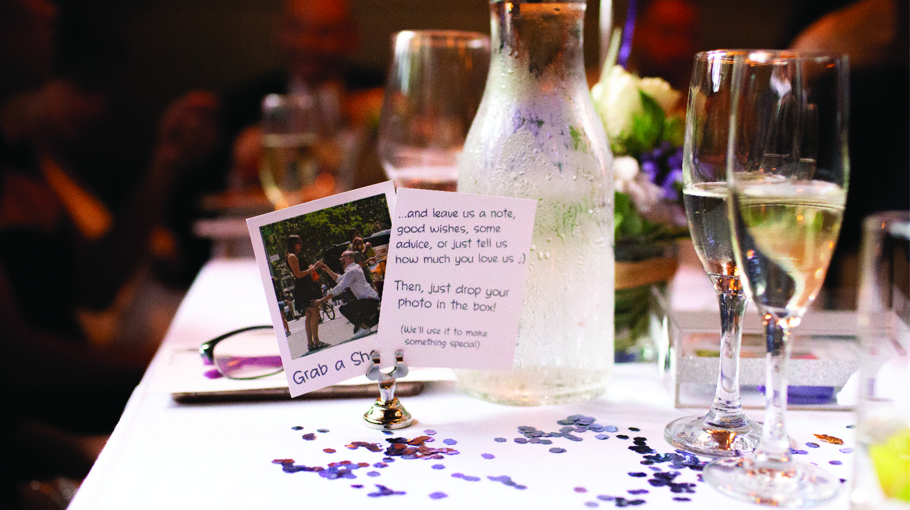

The last time we checked, the average cost of a wedding was over thirty thousand dollars. The average cost in New York City? I believe that number was close to eighty thousand in Manhattan! Spend that if you can and don’t mind doing so, we saw how easy it was to get caught-up. But it being “the most important day of our lives,” please. Party’s are thrown in celebration, and it’s literally just that, a party. Plus, the bride’s parents picking up the tab only happens in the movies. And why should they be the ones footing the bill anyway?
“It will not be the best day of our lives, that’s ridiculous. It will however, be a celebration of our lives together and a salute to the adventures that await us.”
Our goal was a non cookie-cutter style wedding with an honest representation of our lives together. We wanted it to be fun, while putting zero pressure on our friends and family. We also didn’t want to spend anywhere near the supposed “average cost.”
We threw a celebration in New York, a second in Russia and flew to South Africa for our Honeymoon. Total cost including flights… $8,021.35 – yeah, we calculated to the penny and I think we did pretty good. Also, the USD to Ruble conversion really worked in our favor.
The New York celebration was held in one of our favorite restaurants. We had a four-course menu and full beverage package. We were free to decorate as we liked, and they cleaned up after us. The celebration in Russia was held in a beautiful restaurant as well. Again, a four-course menu was served, and we were allowed to bring our own alcohol.
Venues, including food and alcohol: $3,469.09
Our save the date was a simple Instagram post not specifically asking anyone to actually save the date. But we did send formal invites to the New York celebration. We designed and printed the invitations ourselves using stationery from our local Staples store. The invites in Russia were done by word-of-mouth. We designed the place cards, vows and menus ourselves as well.
Invitations, including supplies: $80.84
The New York venue let us decorate as we pleased, and the venue in Russia didn’t need any decorations other than a few flowers. We kept the party favors simple.
Decorations and party favors: $615.34
A grand fairy-tale style wedding would have felt like a fictitious performance. So, using local vendors and small businesses was important to us. We wanted the details to be personal and meaningful. My favorite florist is a two-man operation who work out of a leased space in the subway station near my office. I buy my wife flowers from them all the time. They were able to turn one of my favorite arrangements into the centerpieces for the New York celebration. The bouquet and boutonniere came from a local florist near our home and my sister-in-law took care of arranging the flowers in Russia.
Flowers and centerpieces: $301.42
Throughout the years, we spent a lot of nights talking and bonding over coffee and cupcakes at a local Bakeshop. They have a few locations throughout Brooklyn and Manhattan. We love their cupcakes and arranged a few dozen for the New York celebration. We also got macaroons from another spot we often visit for cappuccinos, who also have great desserts! And we did end up getting a beautiful little wedding cake in Russia.
Dessert: $293.07
We didn’t want groomsmen nor bridesmaids. And running around the city taking wedding photos in places that had nothing to do with the event, just didn’t make sense to us. What we were looking for was a handful of photos, candid shots, unpoised and truthful. It was not “our big day.” Sure, we were celebrating us, but it was a celebration amongst family and friends. That’s what we wanted to capture, and our photographer delivered.
Our idea for Russia was the same. Our photographer there specializes in weddings, so he did get us to take a couple of shots where we’re posing for the camera. But he did also manage to capture the candid kind of photography we we’re hoping for. We were very happy.
Photographer(s): $840.91
Luckily enough (before we headed to Kleinfeld), my then wife-to-be, fell in love with the first dress she tried on. Aside from some minor alterations, it fit perfectly, and the process went smoothly. We shopped around a bit more for her second dress, but again, the process played out well.
I bought a new suit for New York and wore one I already owned for Russia. The couple of shirts, pair of shoes, and accessories I picked up, completed my looks.
Her wardrobe: $857.03
His wardrobe: $619.97
Hair, makeup and nail appointments we’re made at some of our regular spots. And in Russia, we had someone over her parents house a couple of hours before the celebration to do my wife’s hair and makeup.
Mani-Pedi: $98.75
Hair & Makeup: $393.03
Part of the reason for those freshly manicured hands was of course, the wedding bands! I knew the engagement ring I chose had a matching wedding band. She really liked its design, so hers was just a matter of ordering the companion ring. I debated between two designers for mine, but ultimately fell in LOVE with one.
Her band: $1,217.00
His band: $1,887.26
To make this all more than just a party, we had to make sure it was all legal. Which of course meant paying the fees and obtaining the licenses. We had my brother ordained and registered as a minister, and got our marriage license. Technically, we could have been married for about a hundred bucks!
The paperwork: $112.40
The Bed and Breakfast on the night of our Mini-moon, the flight to Russia for our second celebration, and the flight and hotel stay during our Honeymoon, rounded out the rest of the wedding expenses.
Bed & Breakfast: $379.53
Flight to Russia: $1,722.04
Honeymoon flight and hotel: $2,517.76
If you’re keeping track, the costs added up to $15,405.44. But our friends and family are amazing people and they were very generous with us. It’s such a weird feeling to open card after card of monetary gifts. Don’t get me wrong, we definitely appreciated the generosity and it helped us a great deal, but we had zero expectations and something about it was kind of unsettling. Contrary to popular belief, wedding guests aren’t required to give a gift – and there’s certainly no minimum amount they have to spend. That being said, we’ve always been happy to give whenever we attend a wedding, so I can see why the tradition continues.
Total cost: $8,021.35 (with the generosity of our friends and family)
Screw the average cost of a wedding – we kilt'it!
We weren’t sure if the money we spent while on our honeymoon should have been part of the equation, but if accounted for, we’d total $10,766.43.
If you’re interested or just curious, below are links to just about everything mentioned throughout the site. It’s our personal wedding resource which we’ve personally compiled, used and recommend.
Engagement Weekend
Hotel: Hotel Henri NYC
Brunch: Park Avenue Autumn/Winter/Spring/Summer
Dinner: Wined Up
Wedding Venues
New York: Cebu
Russia: Baloven'
Invitations/Decorations/Party Favors
Amazon
Bed Bath & Beyond
Michaels
M&M’s
Party City
Staples
The Container Store
Flowers
Center Pieces: PF Flowers, at the 39th Street entrance of the B, D, F, M lines (Manhattan)
Bouquet & Boutonniere: Elegant Florist
Dessert
Little Cupcake Bakeshop
PEP Bakehouse and Coffee Shop
Photographers
New York: Tyler Blint-Welsh
Russia: Nicolay Rozhdestvenskiy
Wardrobe
Wedding Dress, New York: David's Bridal
Wedding Dress, Russia: Lord & Taylor
His Suit, Her Shoes, and Accessories: Century 21
His Shoes: Cole Haan
“Mr. & Mrs.” Honeymoon T-shirts: Bedroc Custom Printing
Salons
Dyanna Spa
Olga Rebrova
Pilo Arts
Wedding Bands
Hers: James Allen
His: Cartier
Mini-Moon
Bed and Breakfast: Wilbraham Mansion
Shops and Restaurants: Washington Street Mall
Light House: Cape May Lighthouse
Winery: Cape May Winery
Additional Sources
Get Ordained to Officiate Weddings: American Marriage Ministries
Apartment shopping? Street Easy